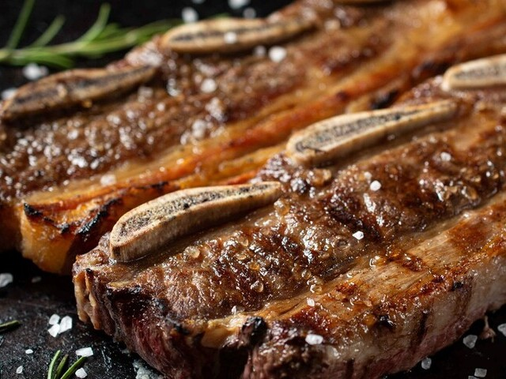
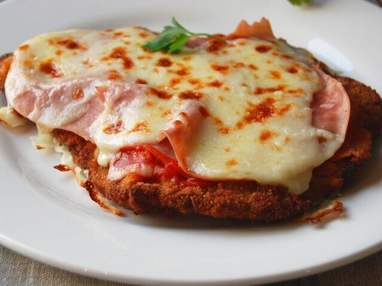

RecetasYa
Inicio
Catálogo
Contacto
Descubre recetas
Tipo de comida:
Selecciona tipo de comida
Almuerzo / Cena
Entrada
Postre
Ingrediente principal:
Selecciona ingrediente principal
Carne vacuna
Pollo
Cerdo
Pescado
Vegetariano
Tipo de cocción:
Selecciona tipo de cocción
Frito
Horno
Horno de barro
Parrilla
Hervido
Salteado
A la plancha
Acompañamiento:
Selecciona acompañamiento
Papas fritas
Puré
Ensalada
Arroz
Fideos
Sin acompañamiento

Costillar al asador
Dificultad media
1h 30min aprox.
Ver receta...

Milanesa Napolitana
Dificultad baja
50min aprox.
Ver receta...